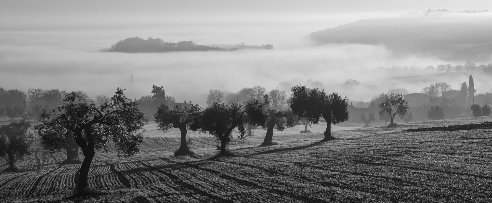
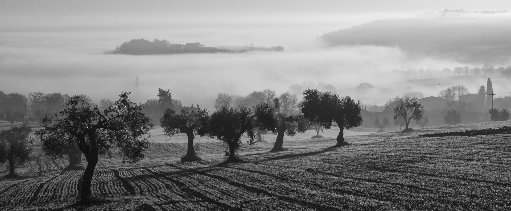

About Me
Hi! I'm Danielle. My whole life, I've loved photography. What fascinates me the most, is the ability to capture a moment and freeze it in time. I decided to pursue my passion for photography in college. The knowledge I gained about the technique and art of photography truly propelled my interest to new heights. Photography has greatly impacted and changed our world. I look forward to adding my work to this revolutionary collection.
My love behind the lens comes forth in my photography. To me, "Photography is life's elegance preserved in the most beautiful format."
Gallery


 
